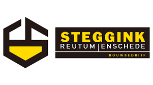

Mijn Werk
Eerst gaan we het hebben over stages, ik heb veel stages gedaan op mijn oude school en omdat ik timmerman wilde worden. In totaal ben ik naar 3 stages geweest voor timmerwerk en helaas niet voor programmeren. Maar ik heb wel veel geleerd van mijn stages voor timmerwerk, ik heb geleerd hoe ik dingen goed in elkaar moet zetten met hout en andere materialen en ik heb geleerd hoe ik met gereedschap moet werken.

We hebben veel projecten gemaakt voor de verschillende vakken op school. We hebben bijvoorbeeld veel projecten gemaakt voor office, engels, programmeren, webdesign, LLB, ONG en nog een paar andere. Maar hier zijn een paar van de verschillende soorten projecten die we hebben gemaakt
Hieronder staan enkele van de verschillende projecten van verschillende vakken en wat informatie erover
1. Microbit Presentatie
2. Opdrachten voor ONG
3. Menu Kaart
4. Kleine Opdrachten voor C#
5. Portfolio
6. Kleine opdrachten voor Htlm
7. Word Documenten
Hier is wat informatie over de lijst boven dit bericht
met het microbit project begonnen we te leren hoe het was om een programmeur te zijn met denken in stappen en moesten we ons project presenteren aan de klas. Voor de ONG projecten gaat het allemaal over leren over de toekomst en het maken van CV's, hoe je dingen op de markt brengt, interviews, feedback en nog wat andere dingen. Voor de menukaart moesten we tijdens de programmeerles een menukaart maken in C# waar je kunt kiezen wat voor drankjes, voorgerechten, hoofdgerecht en nagerecht je wilt, daar leerden we beter coderen en er zijn andere projecten voor C# om beter te leren programmeren. Voor webdesign moesten we een portpholio maken om te zien hoeveel we geleerd hebben voor htlm en css en we hebben andere kleine projecten voor webdesign gemaakt om te trainen met htlm en css. De laatste dingen op de lijst is voor office, daar maken we word documenten en proberen we te trainen in het gebruik van alle knoppen in word.